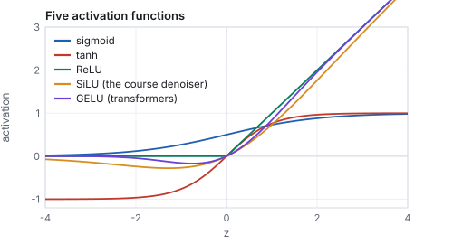
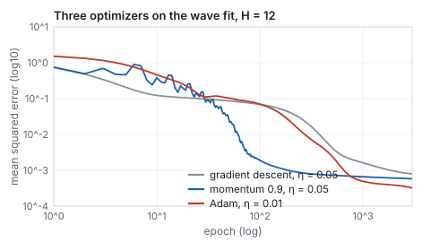
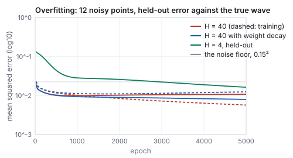
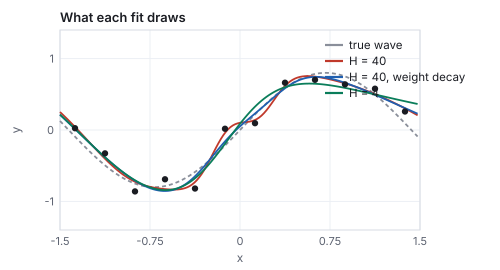
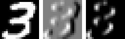
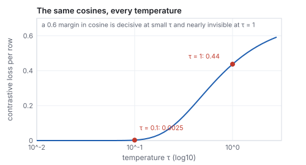

This chapter links to the course’s interactive demos and to original
papers on the open web, and it uses MathJax for its formulas. Read it
through the course website (or download the file and open it in a
browser); a Canvas inline preview will reach neither the demos nor the
math. All chapters.
Neural Networks and Embeddings
CSS 551 · Advanced 3D Computer Graphics · course text
Course text · a network as a function, how it is trained, what it can and cannot fit, the layers that see images and sequences, and the vectors it learns to think in. Assigned by your offering’s course site; the two live exhibits it cites are in the lecture on learned images.
Three ideas underlie every model in the chapters that follow: a neural network is a function whose weights are set by examples; an embedding is a learned vector that stands for a concept, placed so that similar concepts are near; and an encoder and a decoder move between things and their embeddings, with two encoders trained side by side making words and pictures one coordinate system. This chapter states each idea, runs the smallest possible example of it by hand, and shows the same thing computed at full size from the course’s own trained network. Between the ideas it supplies what a working model needs: the activation functions and their derivatives, backpropagation through more than one hidden layer, the optimizers that replace plain gradient descent, the overfitting that a held-out set exposes and weight decay tames, and the two layer types, convolution and attention, that image and text models are built from.
Definition (neural network)
A neural network is a function \(f_\theta : \mathbb{R}^{n} \to \mathbb{R}^{m}\)
built from alternating linear maps and fixed nonlinearities, whose
behavior is set by a vector of weights \(\theta\). The
two-layer perceptron of the lecture’s approximator exhibit is
\[
f_\theta(x) \;=\; b_2 + \sum_{h=1}^{H} w^{(2)}_h \,\tanh\!\big(w^{(1)}_h x + b^{(1)}_h\big),
\qquad \theta = (w^{(1)}, b^{(1)}, w^{(2)}, b_2) \in \mathbb{R}^{3H+1}.
\]
The perceptron as a wiring diagram, \(H = 4\). Read left to right: the input is multiplied by \(H\) weights and offset by \(H\) biases (blue), each result is squashed by \(\tanh\) (green), and the \(H\) squashed numbers are combined by a second linear map (red). Nothing else happens. A “deep” network repeats the middle two stages several times, with vectors in place of single numbers.
There is no mystery in evaluating one. The point of the next example is
that you can do it with a pocket calculator, and that every larger
network is the same arithmetic with more rows.
Worked example (a forward pass by hand)
Take \(H = 2\) with weights
\(w^{(1)} = (1.0, -1.0)\), \(b^{(1)} = (0.5, 0.5)\), \(w^{(2)} = (0.8, -0.6)\),
\(b_2 = 0.1\), and the input \(x = 0.4\).
Seven weights, four multiplications, three additions, two table
lookups. The digit-drawing network of the diffusion chapter has a million
weights and its forward pass is about a million multiply-adds; it is
this table with 512 rows per stage and four stages.
1.1 The nonlinearity
Without the squashing step a network of any depth is a single linear
map, because a composition of linear maps is linear; the nonlinearity
is what makes depth do anything. Which one is a choice, and the
choices in use differ in what their derivative does, which Section 2
makes matter.

Five activations. The saturating pair (sigmoid, tanh) have derivatives that vanish for large inputs; the rectifier family (ReLU, SiLU, GELU) keep a slope of 1 on the positive side. The course’s denoiser uses SiLU.
name
\(\sigma(z)\)
\(\sigma'(z)\)
value at \(z = 0.9\)
slope at \(0.9\)
where it is used
sigmoid
\(1/(1 + e^{-z})\)
\(\sigma(1 - \sigma)\)
0.711
0.206
probabilities; gates
tanh
\((e^{z} - e^{-z})/(e^{z} + e^{-z})\)
\(1 - \tanh^2 z\)
0.716
0.487
the perceptron above; small networks
ReLU
\(\max(0, z)\)
\(0\) or \(1\)
0.900
1
most deep networks since 2012
SiLU
\(z\,\sigma(z)\)
\(\sigma(z)\,(1 + z(1 - \sigma(z)))\)
0.640
0.896
the course denoiser; diffusion U-Nets
GELU
\(z\,\Phi(z)\), \(\Phi\) the normal CDF
numerical
0.734
near 0.9
transformers
The saturating functions were the original choice and are still right
for a small network like the perceptron; in a deep one their vanishing
derivative multiplies through the layers and the early weights stop
learning (the vanishing gradient). The rectifiers keep the
gradient alive on their active side, and their smooth variants keep it
alive everywhere.
2 · Training is gradient descent
Training is not programming. Given examples
\((x_i, y_i)\), define a loss such as the mean squared error
\(\mathcal{L}(\theta) = \frac{1}{N}\sum_i (f_\theta(x_i) - y_i)^2\), and
repeat two steps: compute the gradient \(\nabla_\theta \mathcal{L}\), the
direction in weight space that increases the loss fastest, and move
every weight a little the other way,
with a small learning rate \(\eta\). The gradient is computed
by the chain rule, organized so that every weight’s derivative is
obtained in one backward sweep through the diagram; that organization
is backpropagation
(Rumelhart, Hinton & Williams 1986).
For the perceptron the four derivatives are short enough to write down:
for a single example (average over the batch for more), using
\(\tanh' = 1 - \tanh^2\). Notice how the backward sweep reuses the
forward one: the \(a_h\) were already computed, and \(\delta\) is one
number passed back through the red edges, then through the green boxes,
to reach the blue edges.
Worked example (one gradient step by hand)
Continue the example above with the target \(y = 0.3\) and
\(\eta = 0.1\). The error is \(f - y = 0.3132\), the loss
\(0.3132^2 = 0.0981\), and \(\delta = 0.6265\).
the previous row times \(x = 0.4\): \((0.0976,\; -0.1489)\)
Step every weight against its gradient, \(\theta \leftarrow \theta - 0.1\,\nabla\):
\(w^{(1)} = (0.9902, -0.9851)\), \(b^{(1)} = (0.4756, 0.5372)\),
\(w^{(2)} = (0.7551, -0.6062)\), \(b_2 = 0.0374\). Rerun the forward pass
with the new weights: \(f = 0.4814\), loss \(0.0329\), down from
\(0.0981\). One step took the output a third of the way to the target;
the sign of every change was decided by the chain rule, not by anyone
looking at the problem. Repeat a few thousand times over a few thousand
examples and that is all training is.
The approximator exhibit, computed offline by the same library the demo runs: \(H = 12\) (37 weights), full-batch gradient descent on 12 points of a hidden wave, \(\eta = 0.05\). The random-weight curve (orange) has nothing to do with the data; by epoch 20 it has found the general slope, by 400 the shape, by 3000 it passes through every point and follows the hidden curve between them. Loss: 1.73, 0.105, 0.069, 0.0084, 0.0008.
See it liveA network that learns:
the same 37-weight perceptron trained in your browser. Drag
epochs from 0 and watch the curve bend a few steps per
frame while the loss plot falls; try 2 hidden units (it cannot bend
enough) and 40 (it fits a step with a smooth ramp).
Pitfall
The learning rate is the one number that can make training fail
outright. On the wave fit with \(H = 12\), 300 epochs at \(\eta = 0.05\)
reach a loss of 0.019; at \(\eta = 0.3\) and at \(\eta = 1.0\) the loss
is not a number within 300 epochs. A step that overshoots the valley
lands higher on the far wall, the next gradient is larger, the step
larger still, and the weights blow up in a few dozen iterations. The
symptom is a loss that rises instead of falls, or becomes NaN; the
cure is a smaller rate, a schedule that decays it, or the optimizers
of Section 4, whose normalization bounds each step regardless of the
gradient’s size.
3 · Backpropagation through two hidden layers
The perceptron has one hidden layer, and its gradient has a special
form. The general form is one rule applied once per layer: the
error signal \(\boldsymbol\delta^{(k)} = \partial\mathcal{L}/\partial\mathbf{z}^{(k)}\)
at layer \(k\) is the error signal of the layer above, multiplied by
that layer’s weights transposed, times the derivative of the
activation,
\[
\boldsymbol\delta^{(k)} \;=\; \big(W^{(k+1)\top}\,\boldsymbol\delta^{(k+1)}\big)\odot \sigma'(\mathbf{z}^{(k)}),
\qquad
\frac{\partial\mathcal{L}}{\partial W^{(k)}} = \boldsymbol\delta^{(k)}\,\mathbf{a}^{(k-1)\top}, \quad
\frac{\partial\mathcal{L}}{\partial \mathbf{b}^{(k)}} = \boldsymbol\delta^{(k)},
\]
with \(\odot\) the elementwise product and \(\mathbf{a}^{(k-1)}\) the
activations feeding the layer. Each weight’s gradient is the error
arriving at its output times the activation at its input. The forward
pass stores every \(\mathbf{a}\); the backward pass is one matrix
multiply per layer.
Worked example (a 1–2–2–1 network)
Keep the first layer of Section 1 (\(W^{(1)} = (1.0, -1.0)\), \(\mathbf{b}^{(1)} = (0.5, 0.5)\)),
add a second hidden layer
\(W^{(2)} = \begin{pmatrix} 0.6 & -0.4 \\ 0.3 & 0.9 \end{pmatrix}\), \(\mathbf{b}^{(2)} = (0, -0.2)\),
and an output \(\mathbf{w}^{(3)} = (0.8, -0.6)\), \(b^{(3)} = 0.1\); \(\tanh\) everywhere;
\(x = 0.4\), \(y = 0.3\), \(\eta = 0.1\).
forward, layer 1
\(\mathbf{z}^{(1)} = (0.9, 0.1)\), \(\mathbf{a}^{(1)} = (0.7163, 0.0997)\), as before
\(f = 0.3126\), loss \(0.0002\): down by a factor of six
Thirteen weights, one backward sweep, and the deepest weights got the
smallest gradients: \(\boldsymbol\delta\) was multiplied by \(w^{(3)}\), then by
\(W^{(2)}\), and at each layer by a \(\tanh'\) below 1. Ten layers of
that and the first layer would barely move, which is the vanishing
gradient of Section 1 seen in numbers, and the reason for the
rectifiers, for careful initialization, and for the skip connections
that let \(\boldsymbol\delta\) bypass layers in every deep network built since
2015.
Automatic differentiation (PyTorch’s backward()) does
exactly this sweep for any composition of operations, recording the
forward pass as a graph and walking it in reverse; nobody writes the
gradient of a modern network by hand. The point of writing this one is
that there is nothing else in the box.
4 · Optimizers: momentum and Adam
Plain gradient descent has two faults that the loss curve of Section 2
shows: it takes tiny steps where the loss surface is flat, and it
oscillates where the surface is a narrow valley, because the gradient
points across the valley more than along it. Two amendments fix both,
and one of them is the default of every training script.
Definition (momentum, Adam)Momentum keeps a running velocity, \(\mathbf{v} \leftarrow \beta\mathbf{v} + \mathbf{g}\),
\(\theta \leftarrow \theta - \eta\mathbf{v}\), with \(\beta \approx 0.9\): gradients that
agree from step to step add up (a rolling ball), gradients that
alternate cancel. Adam (Kingma and Ba, 2015) keeps two running
averages, of the gradient and of its square,
\[
\mathbf{m} \leftarrow \beta_1\mathbf{m} + (1 - \beta_1)\mathbf{g}, \qquad
\mathbf{v} \leftarrow \beta_2\mathbf{v} + (1 - \beta_2)\mathbf{g}^2, \qquad
\theta \leftarrow \theta - \eta\,\frac{\hat{\mathbf{m}}}{\sqrt{\hat{\mathbf{v}}} + \epsilon},
\]
with \(\hat{\mathbf{m}} = \mathbf{m}/(1 - \beta_1^t)\), \(\hat{\mathbf{v}} = \mathbf{v}/(1 - \beta_2^t)\)
correcting the averages’ bias toward zero at the start, and defaults
\(\beta_1 = 0.9\), \(\beta_2 = 0.999\), \(\epsilon = 10^{-8}\). Each weight
gets its own step size, the learning rate divided by the typical size of
that weight’s gradient.
Worked example (the first Adam step)
Apply Adam with \(\eta = 0.01\) to the seven gradients of Section 2,
\(\mathbf{g} = (0.0976, -0.1489, 0.2440, -0.3722, 0.4487, 0.0624, 0.6265)\).
At \(t = 1\), \(\mathbf{m} = 0.1\mathbf{g}\) and \(\hat{\mathbf{m}} = \mathbf{g}\);
\(\mathbf{v} = 0.001\mathbf{g}^2\) and \(\hat{\mathbf{v}} = \mathbf{g}^2\); so every
update is \(\eta\,\mathbf{g}/|\mathbf{g}| = \pm0.01\). The weight with gradient
0.0624 and the weight with gradient 0.6265 both move by 0.01. Gradient
descent would have moved them by 0.006 and 0.063 at the same \(\eta\).
Adam’s first step is a step of length \(\eta\) along the sign of the
gradient in every coordinate; later steps shrink for coordinates whose
gradient is noisy (large \(\hat{\mathbf{v}}\) relative to \(\hat{\mathbf{m}}^2\))
and stay near \(\eta\) for coordinates whose gradient is consistent.
That is why the pitfall of Section 2 does not apply to it in the same
way: a step cannot exceed about \(\eta\) per coordinate, whatever the
gradient.

The wave fit of Section 2 three ways, same initialization, same 12 points. Mean squared error at epochs 100, 300, 1000, 3000: gradient descent 0.069, 0.019, 0.0016, 0.0008; momentum 0.0019, 0.0008, 0.0007, 0.0006; Adam 0.070, 0.008, 0.0005, 0.0003. Momentum is fastest here (a smooth, low-dimensional problem); Adam ends lowest.
On a large network trained on minibatches, whose gradients are noisy
estimates, Adam’s per-weight normalization is what makes one
learning rate work across layers whose gradient scales differ by
orders of magnitude, and the AdamW variant (weight decay applied
directly, Section 5) is the default optimizer of the diffusion models
and transformers of the later chapters. The course’s denoiser was
trained with it.
5 · What a trained network is good for, and overfitting
Two facts about a trained network carry the rest of the chapter.
Capacity. A network with enough hidden units can
approximate any continuous function on a bounded domain to any accuracy
(Cybenko 1989,
Hornik 1991).
Each \(\tanh\) unit is a smooth step placed at \(x = -b^{(1)}_h/w^{(1)}_h\)
with steepness \(w^{(1)}_h\); a sum of enough steps can trace any curve.
The theorem says nothing about how many units or how much training;
the left panel below shows the practical version.
Smoothness between the examples. More important for
what follows: a trained network interpolates. Between two
training points it draws a smooth curve, not a jump to the nearer
one. A lookup table has the first property trivially (store every
example) and the second not at all. The right panel is the whole
argument of the diffusion chapter in one picture: the exact denoiser
it derives is a lookup table over the training set, and replacing it by
a network is what lets the model produce images that are not in the set.
Left: the step target after 3000 epochs with \(H = 2\), 12 and 40 (loss 0.016, 0.010, 0.005). Two units suffice for one step; more units fit the noise around it too. Right: the same twelve wave points answered two ways. The staircase returns the nearest stored example, which is what a table does; the network passes through the same points and is smooth in between.
5.1 Overfitting, and the held-out set
Capacity cuts both ways. A network large enough to trace any curve can
trace the noise in its examples as well as the signal, and a training
loss that keeps falling then says nothing about how the network will
do on data it has not seen. The only honest measure is a
held-out set: examples the optimizer never touches, evaluated
as training proceeds.

The wave sampled at 12 points with noise of standard deviation 0.15, and the held-out error measured against the true wave on 150 points. Dashed is training error, solid held-out.

What each fit draws after 5000 epochs. The unregularized \(H = 40\) network bends toward individual noisy points; weight decay keeps it near the true curve.
Worked example (reading the curves)
The noise has variance \(0.15^2 = 0.0225\), so a curve that fits the true
wave exactly would still have a training error of about 0.0225. After
5000 epochs the \(H = 40\) network has training error 0.0057, a quarter
of the noise floor: it has memorized a quarter of the noise. Its
held-out error against the true wave reached its minimum, 0.0099, at
epoch 950, and rose to 0.0108 by the end; every epoch after 950 made the
network worse at the thing it was for. With weight decay
\(\lambda = 0.002\) (each step also shrinks every weight by
\(\eta\lambda\theta\), penalizing large weights, which are what a sharp
wiggle needs) the training error stays at 0.0124 and the held-out
error ends at 0.0080, the best of the three. The \(H = 4\) network
cannot wiggle at all and ends at 0.0164 held-out: too little capacity is
also a failure, just a different one. The recipe that follows from
this is the recipe every model in the later chapters uses: a large
network, regularized, trained with a held-out set watched and stopped
or selected at the held-out minimum.
Other regularizers do the same job by other means: dropout
zeroes a random subset of activations at each training step so that no
unit can rely on a specific partner; data augmentation
(flipping, cropping, recoloring the examples) enlarges the training set
with transformations the network should be invariant to; and more data
is the regularizer that beats all of them, which is why the diffusion
chapter’s largest models are trained on billions of images.
6 · Two more layers: convolution and attention
A fully connected layer on a \(512\times512\) image would have
\(786{,}432\) inputs per unit and learn nothing about the fact that a
cat in the corner is the same cat as one in the middle. Two layer
types encode such structure, and between them they cover every model in
the later chapters.
6.1 Convolution
Definition (convolutional layer)
A convolutional layer slides one small kernel \(K\) (typically \(3\times3\))
over the image and computes at every position the weighted sum of the
neighborhood, \(y_{ij} = \sigma\big(b + \sum_{u,v} K_{uv}\,x_{i+u,\,j+v}\big)\),
producing a feature map the size of the input. The nine weights
are shared by every position, so the layer has ten parameters instead of
millions, and a pattern learned in one place is detected everywhere. A
layer learns many kernels (32 to 512), each producing one map, and the
next layer convolves over all the maps at once.
Worked example (one output of one kernel)
Take the handwritten 3 of the
image-space chapter and the kernel
\(K = \begin{pmatrix} -1 & 0 & 1 \\ -2 & 0 & 2 \\ -1 & 0 & 1 \end{pmatrix}\),
which responds to a vertical edge. At pixel \((12, 15)\) (row, column) the
\(3\times3\) neighborhood is three identical rows \((0.99, 0.29, 0)\): ink
on the left, paper on the right. The sum is
\(-1(0.99) + 0(0.29) + 1(0) - 2(0.99) + 0 + 0 - 1(0.99) + 0 + 0 = -3.96\), and
after a ReLU the unit is silent, 0. A second kernel with the opposite
sign fires 3.96 here. Over the whole digit the map ranges from
\(-3.96\) to \(3.78\), and after the ReLU 23 % of the pixels exceed 0.5:
the stroke’s right-facing edges. This kernel was written down; a
trained layer’s kernels are found by the gradient, and the first
layer of every image network ends up with edge detectors like this one
at several orientations, because that is what the loss wants.

The digit, its convolution with the kernel above (mid-gray is zero), and the feature map after a ReLU.
Stacking convolutions with downsampling between them (pooling, or
strided convolution) gives each deeper unit a larger receptive field:
edges, then corners and textures, then parts, then objects. Running the
stack in reverse with upsampling gives a decoder, and a stack with skip
connections from each encoder level to the matching decoder level is
the U-Net, the denoiser of the first diffusion models
(the diffusion chapter). The
filters of the image-space chapter
are convolutions with kernels chosen by hand; a convolutional layer is
the same operation with kernels chosen by the loss.
6.2 Attention
Definition (attention)
Given a set of \(n\) vectors \(\mathbf{x}_1 \dots \mathbf{x}_n\) (words of a
sentence, patches of an image), attention computes for each one a
query \(\mathbf{q}_i = W_q\mathbf{x}_i\), a key
\(\mathbf{k}_i = W_k\mathbf{x}_i\) and a value \(\mathbf{v}_i = W_v\mathbf{x}_i\),
and replaces each vector by a weighted average of all the values,
weighted by how well its query matches each key:
\[
\mathbf{y}_i = \sum_j \alpha_{ij}\,\mathbf{v}_j, \qquad
\alpha_{ij} = \frac{\exp(\mathbf{q}_i\cdot\mathbf{k}_j/\sqrt d)}{\sum_{j'}\exp(\mathbf{q}_i\cdot\mathbf{k}_{j'}/\sqrt d)}.
\]
The weights depend on the data, not only on the position, which is what
a convolution cannot do; and every vector can look at every other in
one layer.
Worked example (three tokens in two dimensions)
Tokens \(\mathbf{x}_1 = (1, 0)\), \(\mathbf{x}_2 = (0, 1)\), \(\mathbf{x}_3 = (1, 1)\),
with \(W_q = W_k = I\) and \(W_v = \begin{pmatrix} 0.5 & 1 \\ 1 & 0.5 \end{pmatrix}\),
so the values are \((0.5, 1)\), \((1, 0.5)\), \((1.5, 1.5)\). For token 3 the
scores \(\mathbf{q}_3\cdot\mathbf{k}_j/\sqrt2\) are \((0.707, 0.707, 1.414)\);
the softmax gives \(\alpha_3 = (0.248, 0.248, 0.503)\), and
\(\mathbf{y}_3 = 0.248(0.5, 1) + 0.248(1, 0.5) + 0.503(1.5, 1.5) = (1.128, 1.128)\).
For token 1 the scores are \((0.707, 0, 0.707)\), the weights
\((0.401, 0.198, 0.401)\): token 1 attends to itself and to token 3, which
shares its first coordinate, and mostly ignores token 2, which shares
nothing. The output \(\mathbf{y}_1 = (1.000, 1.102)\) has mixed in token
3’s value. Change the tokens and the weights change with them.
A transformer is attention layers alternating with small
fully connected layers, applied to a sequence of tokens with a
positional encoding added so that order is not lost (the same sines and
cosines as the NeRF
encoding). It is the architecture of CLIP’s text encoder (Section
8), of the language models, and since 2023 of the largest diffusion
models, which cut the image into patches and treat them as tokens. The
cross-attention by which a caption steers an image model is the same
formula with the queries from the image tokens and the keys and values
from the caption’s.
7 · Embeddings
Definition (embedding)
An embedding of a set of things (words, digits, images)
is a map from each thing to a vector in \(\mathbb{R}^d\), learned so that
things which behave alike land near each other. Similarity is measured
by distance or, more often, by the cosine of the angle between vectors,
\[
\cos(\mathbf{u}, \mathbf{v}) = \frac{\mathbf{u}\cdot \mathbf{v}}{\|\mathbf{u}\|\,\|\mathbf{v}\|} \in [-1, 1].
\]
Worked example (cosine similarity)
Let \(\mathbf{u} = (3, 4, 0)\), \(\mathbf{v} = (4, 3, 0)\) and
\(\mathbf{w} = (-4, 3, 0)\). All three have length 5.
\(\mathbf{u}\cdot\mathbf{v} = 12 + 12 + 0 = 24\), so
\(\cos(\mathbf{u},\mathbf{v}) = 24/25 = 0.96\): nearly the same
direction. \(\mathbf{u}\cdot\mathbf{w} = -12 + 12 + 0 = 0\), so
\(\cos(\mathbf{u},\mathbf{w}) = 0\): unrelated. Cosine ignores length,
which is why embeddings are usually normalized and only their direction
carries meaning.
Nobody places the points. A network puts them where its task goes better;
the famous 2013 result was that word vectors trained only to predict
neighboring words end up supporting arithmetic, with “king”
minus “man” plus “woman” landing near
“queen” (Mikolov et al.).
The lecture’s embedding exhibit is a smaller and more honest
version that you can check to the last digit: the digit-drawing network
of the diffusion chapter carries a table of eleven 64-dimensional class vectors
(one per digit, one for “no class”) that it learned only from
denoising. Nobody told it that a 4 looks like a 9.
Read straight from the weight file. Left: the eleven vectors projected onto their two principal axes (18 % and 18 % of the variance; the picture is a shadow of a 64-dimensional arrangement). Right: every pairwise cosine, computed in all 64 dimensions. The nearest neighbor of 4 is 9 (0.54), of 3 is 5 (0.52), of 7 is 9 (0.48), of 2 is 3 (0.39); the 1, which shares strokes with nothing, is far from everything. The network placed digits that share strokes together because a denoiser that knows “this is a 4” and “this is a 9” must do nearly the same work for both.
Worked example (arithmetic on the course’s embeddings, and what it does not do)
Word vectors support \(\mathbf{e}_{\text{king}} - \mathbf{e}_{\text{man}} + \mathbf{e}_{\text{woman}}\).
Try the same on the digit vectors. \(\mathbf{e}_4 - \mathbf{e}_9 + \mathbf{e}_7\)
has, among the classes other than the three operands, the nearest
neighbor 2 at cosine 0.31; among all classes, 7 at 0.75. \(\mathbf{e}_3 - \mathbf{e}_5 + \mathbf{e}_8\)
lands nearest 9 (0.24) excluding the operands, 8 (0.68) including them.
In every case the result stays close to the last operand and no
excluded class is near: the digit space has no “subtract a loop,
add a stroke” direction, because nothing in the denoising task
required one, and eleven points in 64 dimensions are too few to define
directions. The word result works because a vocabulary of a hundred
thousand words trained on billions of contexts has thousands of
relations each realized many times. Embedding arithmetic is a property
of a trained space, not of embeddings as such.
Worked example (the eleventh vector)
The “no class” vector, which the denoiser reads when it is
trained unconditionally (guidance),
has length 2.19 against 3.85 to 5.15 for the ten digits, and its cosine
with them ranges from 0.19 (to the 1) to 0.47 (to the 5). It sits near
the middle of the cloud, shorter than any class vector: the network
learned to read “no information” as a small vector in the
average direction, which is what a mean is.
See it liveEmbeddings, read from the weights:
the same class table, projected live, with the readout’s cosines
using all 64 dimensions.
Hands-on
Everything in this chapter’s figures came from two small library
files. Run these from the css551/ directory with
node -e "…".
Train the perceptron of Section 2 and evaluate it at a point that is not a training point:
Expected: loss 0.00079 f(0.25)= 0.4096 target 0.4181. The point \(x = 0.25\) lies between two training points; the network is within 0.01 of the hidden curve there. Change hidden to 2 and the loss stays above 0.05.
Read two class vectors from the trained denoiser and compare them:
Expected: cos(4,9)= 0.537 cos(1,0)= 0.141, the two extremes of the matrix above. The class table is the first \(11\times64\) floats of the weight file.
In the learning demo, set 40 hidden units and the step target and watch the ramp: it is the \(H = 40\) curve of Section 5, and it overshoots at the step for the same reason.
8 · Encoders, decoders, and one shared space
An encoder is a network that maps a thing to its
embedding, \(E : \text{thing} \to \mathbb{R}^d\); a decoder
maps back, \(D : \mathbb{R}^d \to \text{thing}\). Trained together to
reproduce their input through a narrow middle,
\(\min_{E,D} \sum_i \|D(E(x_i)) - x_i\|^2\), they form an
autoencoder, and the middle is forced to keep only what
matters (Hinton & Salakhutdinov 2006).
Stable Diffusion’s autoencoder is exactly this, with a variational
twist that keeps the latent well behaved (the
diffusion chapter says which): a \(512\times512\times3\) image
becomes a \(64\times64\times4\) latent, 48 times fewer numbers.
Top: the autoencoder. Only the code \(\mathbf{z}\) crosses the middle, so whatever the decoder needs to rebuild the picture must fit in it; edges, colors and layout survive, sensor noise does not. Bottom: two encoders trained into one space. After training, the arrow from a caption and the arrow from a matching photograph point the same way.
Two encoders, one space. Train an image encoder
\(E_I\) and a text encoder \(E_T\) side by side on hundreds of millions of
(image, caption) pairs with a contrastive objective: for each
batch, a matching pair must have a higher cosine than every mismatched
pair,
with a temperature \(\tau\). After training, a sentence and a photograph
are vectors in the same space, so “aim the picture at this
caption” becomes geometry. This is
CLIP (Radford et al. 2021),
and every concept you can say in words is now a coordinate.
Worked example (the contrastive loss on a batch of two)
Two images and their two captions give a \(2\times2\) matrix of cosines
\(S_{ij} = \cos(E_I(x_i), E_T(t_j))\); suppose the encoders currently produce
\[
S = \begin{pmatrix} 0.8 & 0.2 \\ 0.1 & 0.7 \end{pmatrix},
\]
matches on the diagonal. With \(\tau = 0.1\), row 1 becomes
\(\exp(8) = 2981.0\) against \(\exp(2) = 7.39\), so the probability
assigned to the right caption is \(2981.0/2988.3 = 0.9975\) and the loss
for that row is \(-\log 0.9975 = 0.0025\); row 2 gives the same. The batch
loss is \(0.005\): these encoders have already learned this batch.
Repeat with \(\tau = 1\): the same cosines give probabilities
\(0.646\) and a loss of \(0.44\) per row. The temperature is what turns
a small cosine margin into a decisive one; CLIP learns \(\tau\) and ends
near 0.01, which is why its similarities behave like sharp decisions.
The gradient of the loss pushes \(S_{11}\) and \(S_{22}\) up and the
off-diagonal entries down, and the only way to move a cosine is to
move the vectors: that is how the two encoders come to agree.

The same cosines at every temperature. Below \(\tau = 0.05\) the loss underflows to zero and the batch teaches nothing more; above 0.5 a margin of 0.6 in cosine is barely a preference. The learned \(\tau\) settles where the batch’s margins are just decisive.
Two consequences of the shared space matter for graphics. A CLIP
embedding of a caption is the condition every text-to-image model
reads, and its cosine to the embedding of a rendered image is a score
that can be optimized: that is the signal DreamFusion
follows, through a differentiable renderer, to shape a 3D scene from a
sentence. And an embedding is many-to-one, which is the subject of
the image-space chapter’s
last section.
Exercise 1 (forward pass)
With the original weights of Section 1, evaluate \(f(-0.4)\).
Solution
\(z = (-0.4 + 0.5,\; 0.4 + 0.5) = (0.1, 0.9)\), \(a = (0.0997, 0.7163)\),
\(f = 0.1 + 0.8\times0.0997 - 0.6\times0.7163 = 0.1 + 0.0798 - 0.4298 = -0.2500\).
The two units have swapped roles: the network is not symmetric in \(x\)
because \(w^{(2)}\) is not.
Exercise 2 (one more step)
Starting from the updated weights of Section 2, compute the gradient
with respect to \(b_2\) only and take a second step. Does the loss keep
falling?
Solution
After the first step \(f = 0.4814\), so \(\delta = 2(0.4814 - 0.3) = 0.3628\)
and \(\partial\mathcal{L}/\partial b_2 = 0.3628\). Moving only \(b_2\):
\(b_2 = 0.0374 - 0.0363 = 0.0011\), \(f = 0.4451\), loss \(0.0211\), down
from \(0.0329\). The full step (all seven weights) would fall faster,
but every single weight’s step is in a descending direction on its
own; that is what a gradient is.
Exercise 3 (activations)
Replace \(\tanh\) by ReLU in the forward pass of Section 1 (same weights, \(x = 0.4\)). What is \(f\), and what is \(\partial\mathcal{L}/\partial w^{(1)}_2\) for the target \(y = 0.3\)?
Solution
\(z = (0.9, 0.1)\), both positive, so \(a = z = (0.9, 0.1)\) and \(f = 0.1 + 0.72 - 0.06 = 0.76\). \(\delta = 0.92\); the ReLU derivative is 1 for both units, so \(\partial/\partial w^{(1)}_2 = \delta\, w^{(2)}_2 \cdot 1 \cdot x = 0.92\times(-0.6)\times0.4 = -0.221\), against \(-0.149\) with \(\tanh\), whose derivative 0.99 at \(z_2 = 0.1\) barely damped it and whose derivative 0.49 at \(z_1 = 0.9\) halved the other unit’s gradient. Had \(z_2\) been negative, the ReLU gradient through it would be exactly zero: a dead unit.
Exercise 4 (two layers, one weight)
In the network of Section 3, by how much would the loss change if only \(W^{(2)}_{11}\) moved by \(-0.01\)? Estimate from its gradient and compare with a recomputed forward pass.
Solution
Gradient \(0.0341\), so the predicted change is \(-0.01\times0.0341 = -0.00034\), from 0.00119 to 0.00085. Recomputing: \(z^{(2)}_1 = 0.59(0.7163) - 0.4(0.0997) = 0.3827\), \(a = 0.3650\), \(f = 0.1 + 0.2920 - 0.0625 = 0.3295\), loss \(0.00087\). The linear estimate is good to two digits at this step size, which is the assumption gradient descent rests on.
Exercise 5 (Adam’s second step)
Suppose the gradient at step 2 is the same as at step 1 for one weight, \(g = 0.6265\). Compute the Adam update at \(t = 2\) with \(\eta = 0.01\).
Solution
\(m_2 = 0.9(0.0627) + 0.1(0.6265) = 0.1190\), \(\hat m = 0.1190/(1 - 0.81) = 0.6265\); \(v_2 = 0.999(0.000392) + 0.001(0.3925) = 0.000784\), \(\hat v = 0.000784/(1 - 0.998) = 0.3925\); update \(= 0.01\times0.6265/0.6265 = 0.01\). A consistent gradient keeps the step at exactly \(\eta\); the bias correction is what makes the early steps come out this cleanly.
Exercise 6 (capacity)
The perceptron with \(H\) units has \(3H + 1\) weights. How many units
would it take to store twelve arbitrary points exactly, and why does the
\(H = 12\) fit in Section 2 nevertheless stop at loss \(8\times10^{-4}\)
rather than 0?
Solution
Twelve points are 12 constraints; \(H = 4\) already has 13 weights, so
in principle enough freedom exists. Freedom is not reachability:
gradient descent finds a nearby smooth solution, the target points
carry noise (\(\pm0.03\)), and a smooth curve does not pass through
noisy points exactly. The residual is the noise, not a shortage of
weights; the \(H = 40\) run stops at a similar loss.
Exercise 7 (overfitting, with the library)
Using lib/core/mlp-fit.js, train \(H = 40\) on makeSamples('wave', 12, 3, 0.15) for 5000 epochs and measure the mean squared error against TARGETS.wave on 150 evenly spaced points every 250 epochs. Where is the minimum?
Solution
The generator’s run finds the held-out minimum near epoch 950 (0.0099) with the error rising to 0.0108 by 5000; a run with the library’s trainStep and the same seed reproduces the curve to the precision of the figure. A different seed moves the minimum by a few hundred epochs but not its existence: with 12 noisy points and 121 weights, late training always fits noise.
Exercise 8 (convolution)
Apply the kernel of Section 6 to a neighborhood whose rows are \((0, 0.29, 0.99)\), the mirror image of the worked one. Then apply the transposed kernel (the horizontal-edge detector) to the original neighborhood.
Solution
Mirror: \(+3.96\), a right-facing edge, and the ReLU passes it. Transposed kernel on the original: the rows are identical, so the top row contributes \(-(0.99 + 2\cdot0.29 + 0)\) and the bottom row \(+(0.99 + 2\cdot0.29 + 0)\): exactly 0. A horizontal-edge detector sees nothing in a vertical edge; the two kernels are orthogonal detectors, and a trained first layer contains both.
Exercise 9 (attention)
In the three-token example, what is \(\mathbf{y}_2\)? Then double all three tokens and say what changes in the weights.
Solution
By symmetry with token 1, scores \((0, 0.707, 0.707)\), weights \((0.198, 0.401, 0.401)\), \(\mathbf{y}_2 = (1.102, 1.000)\). Doubling the tokens quadruples every dot product (both query and key double), so the scores become \((0, 2.83, 2.83)\) and the weights sharpen to \((0.029, 0.486, 0.486)\): attention’s temperature is the scale of the vectors, which is why the \(\sqrt d\) is there and why the inputs are normalized before each layer.
Exercise 10 (embeddings)
From the cosine matrix in Section 7, which digit is farthest from all
others, and what feature of its shape explains it?
Solution
The 1: its nearest neighbor (3) has cosine only 0.31, the lowest
nearest-neighbor value of any class. A 1 is a single stroke and shares
no loop or crossbar with anything; a denoiser that has decided the
image is a 1 does different work than for any other class, so the
class vector ended up alone.